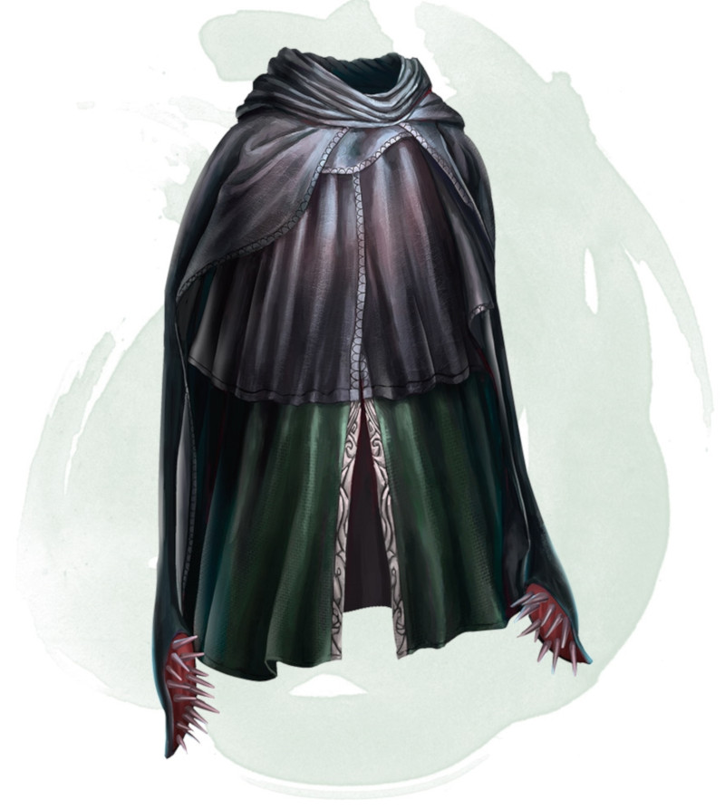

Artefactos
“We are that strange species that constructs artifacts intended to counter the natural flow of forgetting.”
― William Gibson

Capa de desplazamiento
Esta capa de cuero negro fueron confeccionadas con la piel de un bestias desplazadoras, sus partes de tela estan entretejidas con hilos de tendón de los tentáculos de dichas bestias. Esto dejó que la tela de la capa sea capaz de distorsionar y envolvier la luz que golpeaba su superficie haciendo que altere ligeramente la ubicación que parece ocupar su portador.
Cualidades
Tipo: Objeto maravilloso.
Rareza: Rara
sintonízacion: requerida
Uso/Propiedades: Mientras usas esta capa, proyecta una ilusión que te hace parecer que estás parado en un lugar cercano a tu ubicación real, lo que hace que cualquier criatura tenga desventaja en las tiradas de ataque contra ti. Si recibe daño, la propiedad deja de funcionar hasta el comienzo de su próximo turno. Esta propiedad se suprime mientras usted está incapacitado, retenido o no pueda moverse.